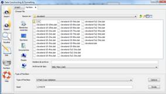
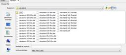
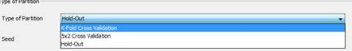
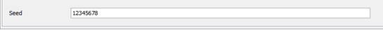

DATA PARTITION
Data partition allows you to make partitions of any existing KEEL format data set. Figure 1 shows the main window of this option.

Figure 1. Process of Making Partitions.
The partition process consists of the next parts:
Step 1: Choose File. First of all, you must choose the path of complete data set (in KEEL format) that you want to make partitions of it (see Figure 2).

Figure 2. Choose data set to make partitions.
Step 2: Type of partition. Once the file is selected, you have to choose the type of partition. The different types considered are:
- K-fold cross validation: this partition allows you to configure the number of fold to the partitions (if you want to configure the different options, you have to click on “Options” button).
- 5x2 cross validation: this partition does not allow you to configure options.
- Hold-Out: this partition allows you to configure the number of partitions and the percentages of training and test sets (if you want to configure the different options, you have to click on “Options” button).

Figure 3. Type of Partition.
Step 3: Seed. To make the partitions of the data set, it is necessary to specify the random generator see to perform the process of division.

Figure 4. Select Seed.
Step 4: Make the partitions. Once that the previous steps have been configured, the partitions will be carried out when you click on “Divide” button. The files generated during the partition process are stored in the directory specified in Step 1 and the name of these files is given automatically and depends on the type of the partition selected.